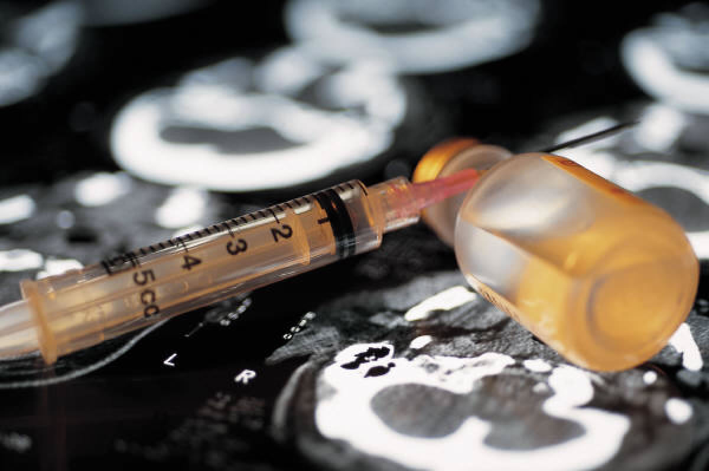
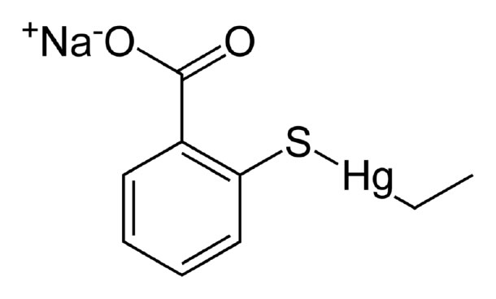

| METALS IN MEDICINE AND THE ENVIRONMENT | |||
| Metals | Thimerosal and Childhood Vaccines | ||
|
History and Background Vaccines play an important role in maintaining the health of the American population. Anne Schuchat, Director of the CDC’s Center for Immunization and Respiratory Diseases estimates that every year, vaccines prevent 33,000 deaths, 14 million infections, and saves the United States $34 billion in health care costs. (3)  Thimerosal is used in vaccines as an additive that prevents bacterial and fungal contamination and infection, especially from multi-dose containers which are prone to contamination. (10) It has been present in vaccines since the 1930s and until 1999, approximately thirty vaccines in the United States contained Thimerosal. Five important vaccines for infants contained thimerosal: diphtheria, tetanus, pertussis, Haemophilus influenzae (Hib), and Hepatitis B. Chemically, thimerosal is fifty-percent mercury by weight. In the body, thimerosal is metabolized to ethyl mercury (chemical formula: C2H5Hg+) and thiosalicylate. Thimerosal is also known by its International Nonproprietary Name (INN) Thiomersal and its IUPAC name Ethyl(2-mercaptobenzoato-(2-)-O,S) mercurate(1-) sodium. Its molecular formula is C9H9HgNaO2S. (11) According to the FDA, “As a vaccine preservative, thimerosal is used in concentrations of 0.003% to 0.01%. A vaccine containing 0.01% thimerosal as a preservative contains 50 micrograms of thimerosal per 0.5 ml dose or approximately 25 micrograms of mercury per 0.5 ml dose.” (10)  In 1998, Andrew Wakefield, a gastroenterologist, published an article in Lancet that claimed to find a link between autism and the MMR (Measles, Mumps, Rubella) vaccine. (2) Until that time, the main side affect associated with thimerosal was minor irritation at the injection site. (10) This sparked debate within the medical community and in response, multiple agencies within the United States and abroad undertook research to see if there was a connection between thimerosal, ethylmercury, and Pervasive Developmental Disorders (under which autism falls). In 1999, in response to concerns about information regarding the harmful affects of prenatal exposure to methyl mercury, the FDA realized that due to thimerosal, infants may have been exposed to a total amount of ethyl mercury that exceeded recommendations for methyl mercury. (10) However, a major difference between ethyl and methylmercury is the fact that ethylmercury is excreted by the body at a faster rater. (7) Ethylmercury has a much shorter half-life than methylmercury (less than one week vs. 1.5 months). (12) That same year, in an attempt at a preemptive strike against a possible risk, the American Academy of Pediatrics and the United States Public Health Service recommended that thimerosal be eliminated as a preservative in vaccines. (10) At that time, other countries such as Canada and Denmark, had already begun to phase out Thimerosal due to the emergence of newer vaccines that no longer required it or could be damaged by its presence. (2) Further Research In 2001, the Institute of Medicine (IOM) released the initial findings of their Immunization Safety Review Committee. The committee found that at that time, there was not sufficient evidence to either accept or reject the link between thimerosal containing vaccines (TCVs) and autism and other disorders, but called the hypothesis “biologically plausible.” In 2004, the IOM committee released its final report, which included information from studies performed in the United States, Denmark, Sweden, and the United Kingdom. Their final conclusion was a “rejection of a casual relationship between thimerosal containing vaccines and autism,” as well as a “rejection of a casual relationship of the MMR vaccine and autism.” (6) Also in 2004, ten of the thirteen authors that worked with Wakefield retracted their original conclusion that there was a casual link between MMR vaccines and autism. This coincided with the release of information about a serious conflict of interest; in 1997, one year before Wakefield’s study was published, he applied for a patent for a vaccine to replace the current MMR one. (2) In an article published in 2006 in Pediatrics, the official journal of the American Academy of Pediatrics, researchers studying children in Montreal stated that, “Thimerosal exposure was unrelated to the increasing trend in pervasive developmental disorder,” and “PDD rates were at their highest value in birth cohorts that were thimerosal free.” (5) The Centers for Disease Control (CDC) recently released findings in September 2007 about TCVs and neuropsychological outcomes. This research, which was published in The New England Journal of Medicine, looked at children ages seven to ten years old to determine if early thimerosal exposure was related to onset of neuropsychological symptoms. According to Anne Schuchat, Director of the CDC’s Center for Immunization and Respiratory Diseases, “some of the results suggested that exposure to higher thimerosal quantities led to better performance. And some of the tests showed that exposure to higher thimerosal content led to worse performance.” Taken together, the researchers determined that receiving TCVs poses no future risk to children. At the same time however, the researchers observed a risk of higher incidence of tics in boys due to early thimerosal exposure. However, the study was unable to conclusively link the two, and the CDC will be doing further research. (3) Conclusion In March 2000, a thimerosal free version of the Hepatitis B vaccine became available in the United States. (10) Other childhood vaccines were quick to follow suit. According to the Food and Drug Administration (FDA), “At present, all routinely recommended vaccines for U.S. infants are available only as thimerosal-free formulations or contain only trace amounts of thimerosal (≤ 1 than micrograms mercury per dose), with the exception of inactivated influenza vaccine. Inactivated influenza vaccine for pediatric use is available in a thimerosal-preservative containing formulation and in formulations that contain either no thimerosal or only a trace of thimerosal, but the latter is in more limited supply.” (10) Thus, the presence of thimerosal in vaccines should not be considered a public health concern. For more information about which vaccines previously contained thimerosal, visit the FDA’s website here. Along with the Geiers, other “quack” healers have latched on to the theory that mercury causes autism, and have been using chelator therapies as a means to “cure” children of their autism. (1) In August of 2005, a five year old boy died of an arrhythmia after receiving EDTA, a chelating agent, and it is estimated that about 10,000 autistic children in the United States receive mercury-chelating agents every year. Currently, 4800 cases of children whose parents claim their autism was caused by vaccines have been brought before the Vaccine Injury Compensation Program. (7) Thus, even though all major governmental regulatory agencies, including the CDC and the FDA have rejected the claim that thimerosal exposure can be linked to disorders such as autism, public opinion on this matter remains divided. More Information National Network for Immunization Information Food and Drug Administration: Thimerosal Centers for Disease Control: Thimerosal References (1) Allen, A. Thimerosal on Trial. Slate. http://www.slate.com/id/2166939/ (2007). (2) Allen, A. True Believers: Why There’s no Dispelling the Myth that Vaccines Cause Autism. Slate. http://www.slate.com/id/2169459/ (2007). (3) Centers for Disease Control and Prevention: New England Journal of Medicine Telebriefing. Early Thimerosal Exposure and Neuropsychological Outcomes at 7 to 10 Years. http://www.cdc.gov/od/oc/media/transcripts/2007/t070926.htm (2007). (4) Centers for Disease Control (CDC). Recommendations Regarding the Use of Vaccines That Contain Thimerosal as a Preservative. MMWR. Morb. Mortal Wkly. Rep. 48, 996-998 (1999). (5) Fombonne, E. et al. Pervasive Developmental Disorders in Montreal, Quebec, Canada: Prevalence and Links With Immunizations Pediatrics 118, 139-150 (2006). (6) Institute of Medicine. Immunization Safety Review: Vaccines and Autism. http://books.nap.edu/openbook.php?record_id=10997&page=1 (2007) (7) Offit, P. A. Thimerosal and Vaccines – A Cautionary Tale. N. Engl. J. Med. 357, 1278-1279 (2007). (8) Parker, S. K., Schwartz, B., Todd, J., Pickering, L.K. Thimerosal-Containing Vaccines and Autistic Spectrum Disorder: A Critical Review of Published Original Data. Pediatrics. 114, 793-804 (2004). (9) Thompson, W.W. et al. Early Thimerosal Exposure and Neuropsychological Outcomes at 7 to 10 Years. N. Engl. J. Med. 357, 1281-1292 (2007). (10) U.S. Food and Drug Administration (FDA). Thimerosal in Vaccines. http://www.fda.gov/cber/vaccine/thimerosal.htm (2007). (11) Wikipedia. Thiomersal. http://en.wikipedia.org/wiki/Thiomersal (2007). (12) World Health Organization: Global Advisory Committee on Vaccine Safety. (2007). Author: Sarah Kleinfeld |
|||
| Topics | |||
|
|||